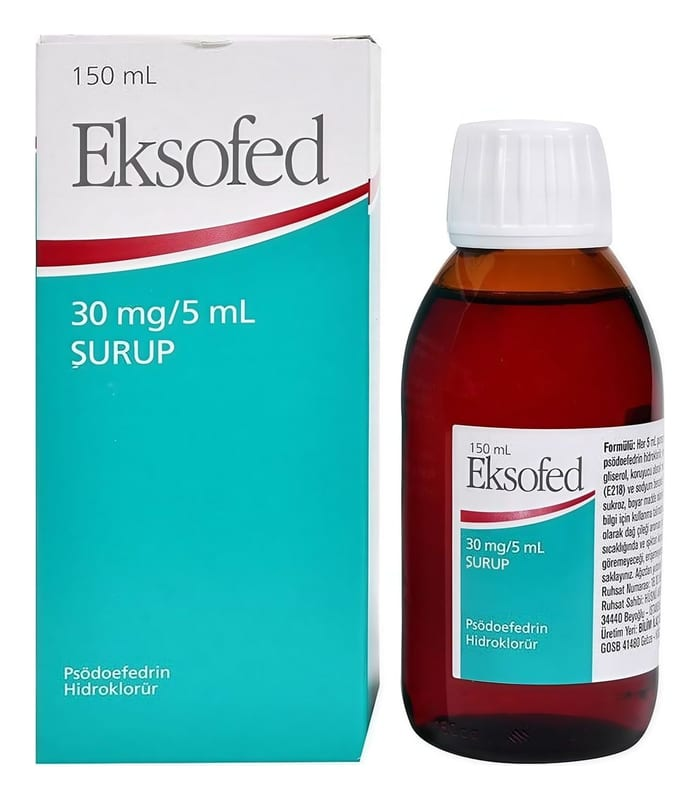

Eksofed 30 mg/5 ml Şurup, 150 ml

Ne için kullanılır
KT · Bölüm 1EKSOFED sistemik nazal dekonjestanlar adı verilen ilaç grubunun bir üyesidir. EKSOFED 150 mL’lik cam şişeler içinde bulunmaktadır.
EKSOFED, alerjik burun akıntısı, vazomotor burun akıntısı (burun mukozasının devamlı kanlanması ve bol mukus salgılaması ile belirgin durum), nezle, grip, soğuk algınlığı gibi durumlarda belirtilerin iyileştirilmesi amacıyla kullanılır.